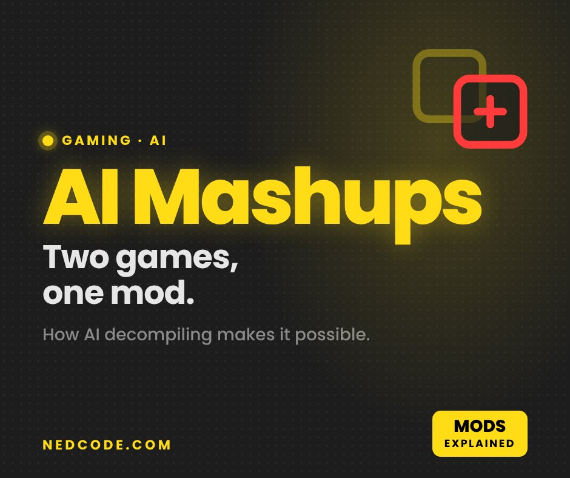

Gaming · AI
AI Game Mashups: How Modders Are Putting Minecraft in Elden Ring

Minecraft running inside Elden Ring. Mario Kart racing in Call of Duty Zombies. A wave of game mashup mods just took over X, and AI is a big reason they’re suddenly possible.
The AI game mashups going viral
The one everyone’s talking about comes from modder Tobyn Jacobs. On September 29, Jacobs posted clips of Minecraft running inside Elden Ring, claiming all 1,600 items, working redstone and Creative Mode made it over, Dexerto and TweakTown reported. Jacobs credits experiments with AI for it, but the mod isn’t public yet.
Others include Mario Kart vehicles in CoD Zombies and Spider-Man swinging around Batman’s Gotham, according to Decrypt and VideoCardz. Unconfirmed: Decrypt notes it isn’t clear which viral clips actually used AI.
What AI decompiling actually is
Games ship as machine code, which is basically unreadable. Decompiling turns it back into code people can read, edit and rebuild. It used to take years of work by hand. AI coding agents now handle huge chunks of it, and that’s what makes merging two games realistic.
How a game mashup gets made
- Step 1Decompile the game into readable code
- Step 2AI agents map and rewrite the parts
- Step 3Pull in a second game’s world or mechanics
- Step 4Test and fix until it runs
- ResultOffline only, anti-cheat off
The proof: Melee is 100% decompiled
The biggest sign this is real: Super Smash Bros. Melee was fully decompiled in September, more than six years after the project started, with AI helping finish the last stretch, Tom’s Hardware and EventHubs reported.
“Super Smash Bros. Melee is now 100% decompiled!”
That doesn’t mean a PC version you can download. EventHubs points out a full port is still far away.
Publishers are pushing back
Not everyone’s a fan. Activision had footage of Maurice Heumann’s AI-assisted Modern Warfare 2 decompile taken down and the site hosting it blocked, while Bethesda went after an AI-built Fallout project, TheGamer and OpenCritic reported.
| Project | Status |
|---|---|
| Minecraft in Elden Ring | Clips only, not released |
| Melee decompile | 100% done, no PC port |
| MW2 AI decompile | Taken down by Activision |
| AI Fallout project | Taken down by Bethesda |
One more catch: most mashups only run with anti-cheat turned off, so taking them online is a quick way to get banned.
My take
This is the most fun gaming has felt in a while. Give me Iron Man in CoD Zombies or Minecraft blocks in GTA and I’m downloading it day one.
Just keep it offline. A ban isn’t worth a meme.
FAQ
What is AI decompiling?
Decompiling turns a game’s machine code back into code people can read and edit. AI tools now do a lot of that work much faster, which makes big mods like game mashups easier to build.
Can I download Minecraft in Elden Ring?
Not yet. Its creator, Tobyn Jacobs, has shown clips but hasn’t released it publicly, according to Dexerto.
Is AI decompiling legal?
It’s a gray area. Publishers have pushed back: Activision and Bethesda had AI-built Modern Warfare 2 and Fallout projects taken down. No court has ruled on AI decompiles yet.
Can I get banned for using mashup mods?
Yes, if you take them online. Most mashups only run with anti-cheat turned off, so keep them offline.
Sources